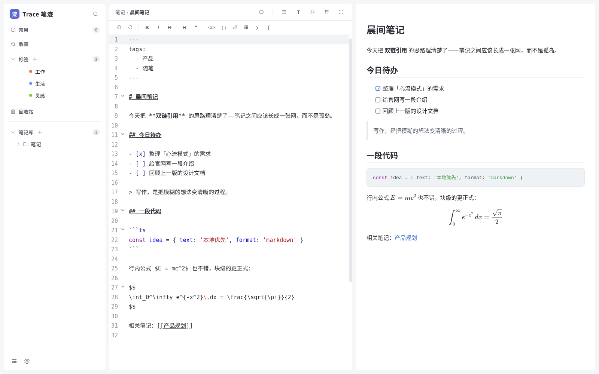
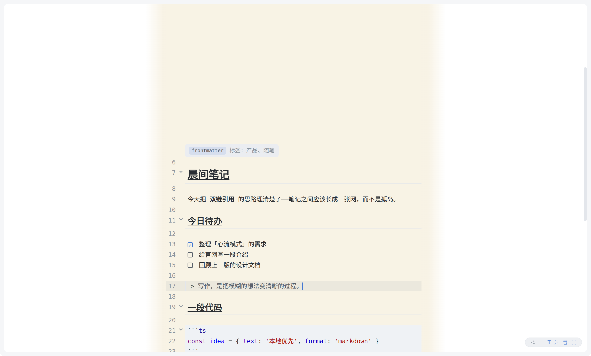
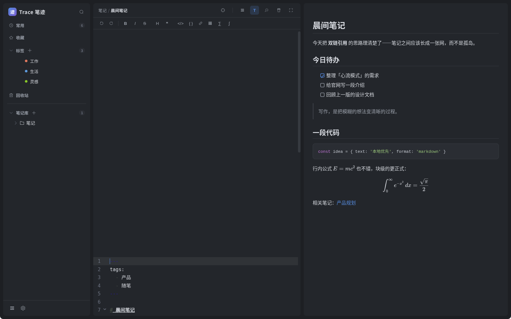

不追大而全，只把「写笔记」这一件事做到顺手。
笔记是普通的 .md 文件、图片是普通文件，无私有格式。应用卸载了，笔记还在——任何编辑器都能打开。
Live Preview 编辑模式：非光标区域实时渲染，光标处回落源码。文件始终是纯 Markdown。
[[笔记名]] 互相引用、反向链接、断链检测、同名消歧，笔记之间长成一张网。
一键沉浸：隐藏界面、打字机锚定、写作栏宽与纸感底色。回车还有机械键盘音效。
GitHub PAT 一键关联，提交 → 拉取 → 推送全自动。冲突有图形化解决界面，不丢一个字。
进程隔离的插件系统与应用内市场；浅色 / 深色 / 预设主题，界面颜色全部可调。
浅色、深色，与让你只看得见文字的心流模式。


